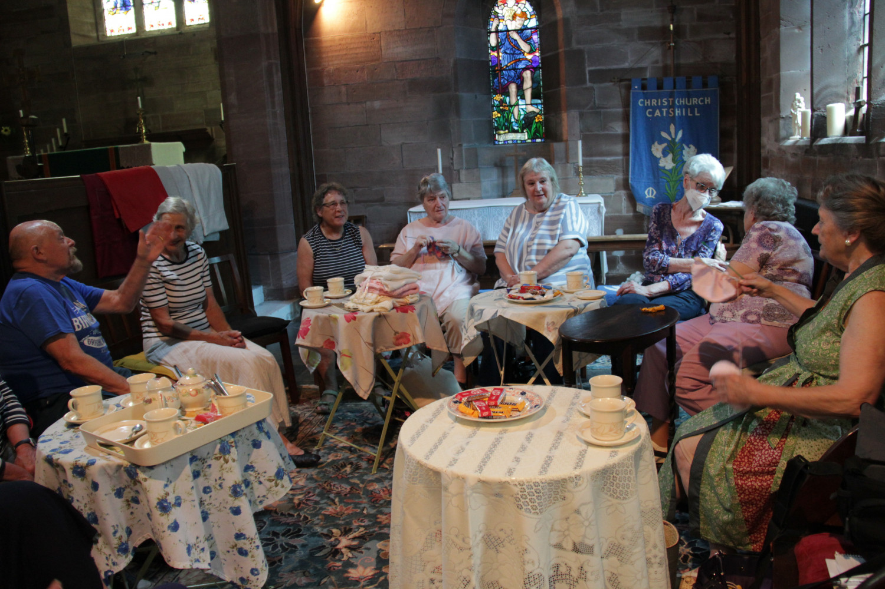

A Hospitable Community
Christ Church is proud to be a deeply embedded part of Catshill village life. Today, our congregation is characterized by a strong, mission-minded vision. We are constantly searching for new ways of reaching out, welcoming people, and serving our parish.
We place a tremendous value on our extensive lay ministry. Much of the lifeblood of our church—from leading our family services of the word to undertaking vital pastoral visits—is driven by dedicated members of our congregation.
- Regular communion taken to the housebound
- Consistent contact with local residential homes


Working Together
We firmly believe that our faith is best expressed in action alongside others. Local ecumenical links are highly valued here, and greater co-operation with the Catshill Methodist and Baptist churches is actively pursued so that we can serve our village united.
We also maintain excellent links with local schools. They regularly use our Victorian building for special services, and our dedicated team is passionate about providing interdenominational input and support to local First School children.
The Parish of Bromsgrove
Christ Church is proud to be one of the ten distinct worshiping communities that make up the vibrant Team Ministry of the Parish of Bromsgrove.
Life at Christ Church
A glimpse into our community events and gatherings.

Our Historic Interior
A beautiful and peaceful space set aside for reflection and worship.

Catshill Connect
Coming together for friendship, support, and great coffee.

Community Outreach
Working hand-in-hand with local schools and ecumenical partners.
A Glimpse into our History
While our focus is firmly on serving the present, we are blessed with a rich heritage. Built in 1838, our church has historic links to the famous poet A.E. Housman, who was baptised here as an infant by our very first Vicar, his grandfather Thomas Housman.